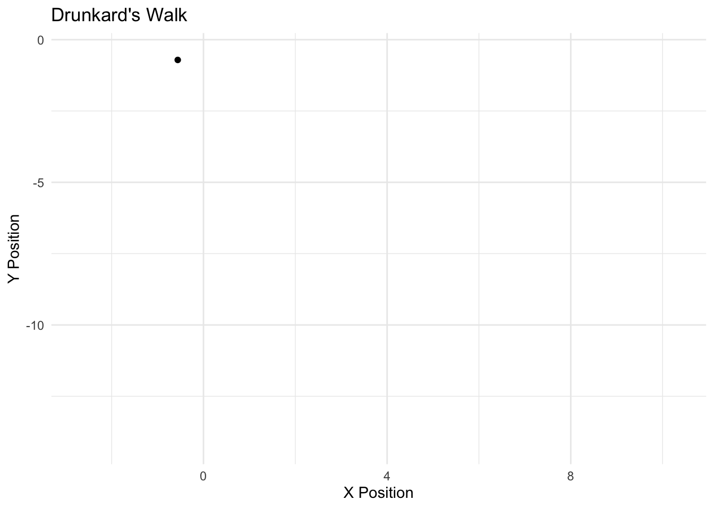

Chapter 11 Panel Data
11.1 Time Series and Panel Data
Panel data are common in political science. Some of the methods we’ve discussed can be used to analyze panel data, such as the multilevel model. I’d like to spend some time considering an alternative class of models, common in panel data analysis. These are a class of models that are common in political science.
The Markov model follows a simple design – the current realization of a “state” is a function of the past realization of a state. We can think of this as an Autoregressive (AR) process, particularly an AR1. If we conceived of the weather as a Markov process, we would model the probability that it is sunny today, based simply on whether it was sunny or rainy yesterday. We discussed the markov model with the notion of MCMC; here, we simulated the posterior (the Monte carlo part) based simply on the most previous simulation of the parameter value (the markov part). The drunkard’s walk is a Markov process. Zucchini and Macdonald (2009) formalize the Markov property as follows:
\[ Pr(C_{t+1}|C_{t},....C_{1})=Pr(C_{t+1}|C_{t}) \]

If I were to model the probability of a voter being a Democrat today, we would conceive of this as based on whether one was a Democrat yesterday. We call the probabilities of movement across \(C\) states as “transition probabilities.” We can represent the transition between \(m\) realizations of \(C\) as “transition matrix.” The rows represent the realization of a state at time \(t\) and the columsn represent \(t+1\). The sum of the rows must equal 1, of course, in order to be a proper probability distribution
\[\begin{bmatrix} x_{11} & x_{12} & x_{13} & \dots & x_{1n} \\ x_{21} & x_{22} & x_{23} & \dots & x_{2n} \\ \vdots & \vdots & \vdots & \ddots & \vdots \\ x_{d1} & x_{d2} & x_{d3} & \dots & x_{dn} \end{bmatrix}\]]
Multilevel data structures are incredibly common in political science. I’ll reference the multilevel model components in a few ways. Sometimes I’ll say level-1 and level-2 (and level-3, level-4, etc). Typically, unit will correspond to the level-1 observation (e.g., country-year, person-wave, person-region, etc). That is, “unit” is the lowest nested level. I’ll refer to “cluster” as the higher nesting level (i.e level 2). For instance, if the data are country-year observations. Then the observation (i.e., unit) is nested within country (i.e., cluster). Please ask if my explanation confuses you. In some cases, a simple convention makes for awkward explanations, in which case I try to adopt a more natural description.
If the classical linear regression equation is,
\[y_{j,i}=\beta_0+\beta_1 x_{j,i}+e_{j,i}\]
Where \(y\) is an observation nested within a country. Then, we may not actually believe that the coefficients are actually fixed in this regression model. Perhaps the intercept in this equation vary across regions. A common technique to deal with this problem is to calculate a unique mean for each country,
\[y_{j,i}=\beta_0+\beta_1 x_{j,i}+\sum_j^{J-1} \gamma_{j} d_j+ e_{j,i}\]
\(d_j\) denotes a dummy variable, specified for \(J-1\) countries. This is somewhat inaccurately called a fixed effects model, since the regression parameters are constrained to a specific value. We will talk more about this model over the coming weeks – it is quite common in political science – but an alternative approach is to assume that the regression coefficients are not fixed, but instead are drawn from some probability distribution. Now,
\[y_{j,i}=\beta_{0,j}+\beta_1 x_{j,i}+ e_{1,j,i}\]
Now, instead of \(J-1\) dummies, we model the intercept as drawn from a probability density; a common one, of course, is the normal.
\[\beta_{0,j}=\gamma_0+e_{2,j}\]
\[e_{2,j} \sim N(0, \sigma^2)\]
Or, we could just compactly write this as
\[\beta_{0,j}\sim N(\gamma_0, \sigma^2)\]
In other words, we think of the model as existing on two levels. At the unit level, we can estimate the linear regression models. But, there may be added heterogeneity across \(j\) clusters – here, countries. This is now captured in the second stage, in which we allow the intercept to vary across \(j\) units. We can extend this model, to include factors that predict the level 2 observations.
Gelman and Hill (2009, 238-239) note that we might envision this two stage models as simply two sets of estimates.
At level 1, we have:
\[y_{j,i}=\beta_{0}+\beta_1 x_{j,i}+ e_{1,j,i}\]
Call this the observation nested within a country.
At level 2 we might specify,
\[y_{j}=\gamma_{0}+\gamma x_{j}+ e_{2,j}\]
In this second stage, we migh predict the country mean on \(y\) with time-invariant country level covariates. This two stage approach may reveal the ecological fallacy. Perhaps country level covariates (or averages) have a different effect than unit level predictors. We might also adopt a mixture of parameterizations to estimate these two stages.
\[p(y_{j,i}=1)=logit^{-1}(\beta_{0}+\beta_1 x_{j,i})\]
\[\bar{y}_{j}=\gamma_{0}+\gamma_1 x_{j}+e_{2,j}\]
The second stage equation is the country level mean on the dichotomous dependent variable. The first stage equation is then a logit model. This should be an intuitive way to understand the multilevel model. However, manually estimating these two stages can be incorporated into a single stage. The key is to recognize the nesting structure in the data. An observation is nested within a country, a country might be nested in a region, etc. Likewise, students are nested within schools, schools are nested within districts. Or, candidates are nested within race, races are nested within election year.
I find it most useful to actually view the data. So, in a two level multilevel model.
Note, that for the four observations, they are nested in two clusters. We could formulate a regression model for the four observations; we could also formulate a regression model for the country level means (assuming more individuals).
11.1.1 Building the Random Effects Model
First, let’s note some limitations of the fixed effects model. We have to add \(J-1\) dummy variables to the model. An equivalent approach is to just remove the \(j\) level means from \(y\).
\[(y_{j,i}-\bar{y}_j)=\beta_{0}+\beta_1 x_{j,i}+ e_{i}\]
Why is this identical to the dummy variable approach (assuming a continuous dependent variable)? We could extend this further,
\[(y_{j,i}-\bar{y}_j)=\beta_{0}+\beta_1 (x_{j,i}-\bar{x}_j)+ e_{i}\]
This is sometimes called the within effects estimator; it is the linear effect of \(x\) on \(y\) removing any variation that exists with respect to the level two indicator.
Thus, you should see that while this is not necessarily mathematically problematic, we are treating the level two variation as largely a nuisance term. Most folks who estimate fixed effects models don’t bother interpreting the fixed effects coefficients! Often, they’re not even presented in academic publications.
Second, we might with to know how much other effects in our model vary across units. For instance, we could examine whether there is heterogeneity in the unit level effects of \(x\) (\(\beta_1\) above). Of course we could generate interactions between our dummies and these independent variables, but notice how quickly the data expand as \(N\) increases. An alternative is to view parameters as non-constant – i.e., random effects – that follow some distribution.
Let’s use the two stage formulation to establish an alternative parameterization. First, what is the problem with the two stage formulation?
Recall the assumption that \(cov(e_i, e_j)=0, \forall i\neq j\)? Or the assumption that \(e_{j,i}\) are independent and identically distributed? Or, the assumption that the off-diagonal elements in the variance covariance matrix of errors in the regression equation are zero? These all are really one in the same, and they’re likely violated if we have clear ``clustering’’ in our data. If, for example, we have:
We probably shouldn’t assume that the errors between observations 1 and 2 are independent (they come from the same unit); nor should we assume the errors between 3 and 4 are independent. In an applied setting, if we have TSCS data observed over time – each country is listed with multiple observations – we shouldn’t assume that the errors are independent within each country! Or, if we have 10 schools, each paired with 1000 students, the students within the school probably have a lot in common, which translates to a more complicated error process.
In the two stage formulation, we don’t ever correct for this process. In fact, all we are doing is recognizing that there is underlying level-2 heterogeneity. In fact, we could correct for this problem of clustering, while also modeling underlying level-2 heterogeneity, while also not needing to include at least \(J-1\) additional parameters.
At this point, I’m going to modify my indexing to note the nesting structure. In addition to being consistent with Gelman and Hill (2009), its a more accurate way to represent the multilevel nature of the data. Now,
\[\begin{eqnarray} y_{i}=b_{0,j[i]}+e_{1,i}\\ b_{0,j}=\omega_0+e_{2,j[i]}\\ e_{1,j} \sim N(0, \sigma_1^2)\\ e_{2,j[i]} \sim N(0, \sigma_2^2) \end{eqnarray}\]
There are no predictors; only variation modeled across two levels – \(i\) nested within \(j\) and variation across \(j\). This is called a “random intercept model.” In particular it’s called the analysis of variance. It’s really no different from the ANOVA formulation you’ve already learned. Here, just envision units nested within treatment conditions.This just separates the variation into between and within units – i.e., between and within conditions. We might also write this in a single ``reduced form’’ equation.
\[\begin{eqnarray} y_{i}=\omega_0+e_{1,i}+e_{2,j[i]}\\ \end{eqnarray}\]
In other words, the variation in \(y\) is a function of between and within variation, such that:
\[var(y_{j[i]})=var(e_{1,j[i]})+var(e_{2,j})\], or just
\[\sigma^2_{(y_{j[i]})}=\sigma^2_{i}+\sigma^2_{{j[i]}}\]
Do you now see the similarity to ANOVA, where \(SS_T=SS_B+SS_W\)? Let’s then extend this model, where intercepts vary across level two units we have predictors that predict both levels.
\[\begin{eqnarray} y_{i}=b_{0,j[i]}+b_{1} x_{i}+e_{1,i}\\ b_{0,j}=\omega_0+\omega_1 x_{j[i]}+e_{2,j[i]}\\ e_{1,j} \sim N(0, \sigma_1^2)\\ e_{2,j[i]} \sim N(0, \sigma_2^2) \end{eqnarray}\]
\(x_{j[i]}\) consist of variables that vary within \(J\) level two observations; \(x_{j}\) consists of variables that only vary between level two observations. We might manaully construct these “between” and “within” variables. For instance, we could include,
\[x_{within}=x_{j}-\bar{x}_{j[i]}\]
\[x_{between}=\bar{x}_{j[i]}\]
These variables are orthogonal and they capture something different – the variation between \(j\) levels and the variation within \(j\) levels. Then,
\[\begin{eqnarray} y_{j[i]}=b_{0,j[i]}+b_{1} x_{within}+e_{1,i}\\ b_{0,j[i]}=\omega_0+\omega_1 x_{between}+e_{2,j[i]}\\ e_{1,j} \sim N(0, \sigma_1^2)\\ e_{2,j[i]} \sim N(0, \sigma_2^2) \end{eqnarray}\]
These are all “random intercept” models, because only the intercept parameter is modeled to vary across \(j\) levels. It is conceivable the model is even more complex, such that the level-1 parameter(s) may also vary across level 2 units.
11.1.2 The Random Coefficients Model
We have applied an additional level of complexity to the model by allowing \(b_0\) to vary, rather than being a constant. We have also included a slope – which is the average slope in the sample. It too might vary across level 2 units. It, however, only varies across subjects and is another way to remove the subject specific effects from the equation. In other words, we could write the model to capture covariate heterogeneity, as:
\[\begin{eqnarray} y_{i}=b_{0,j[i]}+b_{1,j[i]}x_{i}+e_{1}\\ b_{0,j[i]}=\omega_0+e_{2,j[i]}\\ b_{1,j[i]}=\omega_1+e_{3,j[i]} \end{eqnarray}\]
These models follow a very similar logic to the within subjects ANOVA, which assumes that we can decompose variance into subject specific variance, in much the same way as is done above to remove a correlation between error terms. However, now we have three error terms,
\[\begin{eqnarray} y_{i}=\omega_0+e_{2,j[i]}+(\omega_1+e_{3,j[i]})x_{i}+e_{1,i}\\ \end{eqnarray}\]
Two of these error terms correspond to the level-2 equations, one for the level-1 equation. The errors capture heterogeneity in \(y\) after conditioning on \(x\) (the intercept), heterogeneity in \(b\) (the slope) unit level heterogeneity. This is called the ``random slope/random intercept’’ or just” “random slope model”
It rarely makes much sense to just include a random slope and a fixed intercept. The reason is that if we intuitively anticipate variation in the covariance between \(x\) and \(y\) why would we not anticipate heterogeneity in \(y\)? Thus, it is almost always the case that if you see a random coefficient or random slope model, you also will see the researcher allowing the intercept to also vary.
There is an added level of complexity to the random coefficient model. Because we are estimating two level-2 errors, we should also consider the covariance between the errors. That is,
\[cov(e_{2,j[i]}, e_{3,j[i]}) \neq 0\]
If we fail to model this covariance, and make the strong assumption that the covariance is zero, we are positing that as the slope changes the intercept does not change. Let’s examine some reasons as to why this is simply unrealistic.
Thus, unlike the random intercept model, the random coefficients model should also model the covariance between the errors. We could extend the model further to include covariates.
\[\begin{eqnarray} y_{i}=b_{0,j[i]}+b_{1,j[i]}x_{i}+e_{1,i}\\ b_{0,j[i]}=\omega_0+\omega_1 x_{j[i]} +e_{2,j[i]}\\ b_{1,j[i]}=\phi_0+\phi_1 x_{j[i]}+e_{3,j[i]}\\ \end{eqnarray}\]
These coefficients will capture the extent to which covariates change the \(j\)th value of \(y\) (the intercept equation) and how covariates change the relationship between \(x\) and \(y\) (the slope equation). Condensed into a single equation.
\[\begin{eqnarray} y_{i}=\omega_0+\omega_1 x_{j[i]} +e_{2,j[i]}+(\phi_0+\phi_1 x_{j[i]}+e_{3,j[i]})x_{i}+e_{1,i}\\ \end{eqnarray}\]
It’s important to dissect what each of these terms imply.
\(\bullet\) \(\omega_0\) represents the average value of \(y\) conditional on \(x\), across level 2 units. It is the average intercept.
\(\bullet\) Level-2 units vary across around this mean value, \(\omega\) according to \(\e_{2,j[i]}\).
\(\bullet\) \(\omega_1 x_{j[i]}\) represents how the \(j\) level response on \(x\) influences the outcome. Think of this as the between cluster effect on \(y\).
\(\bullet\) \(\phi_0 x_{i}\) represents the relationship between the \(i\)th nested in \(j\)th unit on the outcome. This represents the within cluster effect.
\(\bullet\) \(\phi_1 x_{i} x_{j[i]}\) represents the cross-level interaction between the within and the between effect. This is a natural outcome of including an equation for the slope. Not only are we capturing hetereogeneity in the coefficients effect on y, we are also modeling whether heterogeneity is caused by some covariate – which can be stated another way: how does the within cluster effect change at levels of a between cluster covariate.
\(\bullet\) \(e_{3,j[i]}\) represents the unobserved heterogeneity in the slope of \(b_1\).
\(\bullet\) \(e_{1}\) represents the variation in \(y\) for each \(i\) observation nested in \(j\).
11.2 Practical Considerations
I say this regularly, but it is worthwhile to sit down and fully understand the various ways the multilevel model may be written. Gelman and Hill present five ways to write exactly the same model (Chapter 12). It’s an incredibly flexible approach that not only solves the problem of having repeated observations or some clustering in the data, but also allows one to more fully model nuances in one’s data that are not captured by a fixed intercept and/or slope. When might this model be used?
Time-series cross-sectional designs. Assume \(i\) indexes a country-year observation. Say for each country, \(j\), we observe 3 years of data. Our data set then consist of \(J\) countries \(\times\) 3 years. We probably shouldn’t model the observations as independent of one another, since the errors within countries will be correlated (two observations in the U.S. will have more in common than an observation from the U.S and an observation from another country). Thus, we may model country-year observations as the level 1 equation, and country as the level two equation. We could also model dynamic effects in this data, though with only three years, it is probably best to include a dummy variable for \(t_2\) and \(t_3\).
Panel data. Assume \(i\) indexes a person-wave observation. Say for each person, \(j\), we observe 3 waves of data. Our data set then consist of \(J\) persons \(\times\) 3 waves We probably shouldn’t model the observations as independent of one another, since the errors within each person will be correlated. Now, we could include person-wave observations as the level 1 equation, and person as the level two equation.
Cross sectional data. Now the indexing is somewhat different. Say \(j\) indexes a region and \(i\) indexes a person nested within a region. If people within each region have more in common than people between regions, we can again model this error structure. Estimate the person equation at level 1, but allow the intercepts and/or slopes to vary across regions at level-2.
Rolling cross sectional. Again, the indexing is somewhat different, but we still have a clustering to our data. Say \(j\) indexes an interview time and \(i\) indexes a person nested within an interview point. People are now nested within time. Estimate the person equation at level 1, but allow the intercepts and/or slopes to vary across time at level-2. If the time component is long enough, estimate a time series model at level-2 (Weber and Lebo 2015).
Experimental designs. Adopting the multilevel model to experimental data is really interesting. Not only can we view the standard experimental design as a multilevel structure (see above), but we can easily model more complex error structures with this model – such as when individuals are exposed to multiple treatments (the within subject design), when individuals are exposed to multiple treatments and only one level a second factor (the mixed effects design), and when there are so many conditions that individual pairwise comparisons will increase type 1 error. Likewise, the model is conducive to estimating heterogeneity in treatment effects.
11.2.1 A Continuum
There are a few ways to think of the random effects multilevel model. Think of two models anchoring the polls of a continuum. At one extreme is a model. This is the fixed effects model above, in which each level-2 unit has a unique mean value. At the other end of the continuum is the . This is the regression model with no level 2 estimated means. Instead, we assume the level-2 units completely pool around a common intercept (and perhaps slope). Formally, compare
\[y_{j,i}=\beta_0+\sum_j^{J-1} \gamma_{j} d_j+ e_{j,i}\]
to,
\[y_{j,i}=\beta_0+ e_{j,i}\]
Note that each \(\gamma\) value allows us to predict a unique mean – and there is no common pooling around a particular value. Instead, we assume each level-2 unit is quite different.
In the second case, all level-2 values assume the same mean value \(\beta_0\). This also seems incorrect, in that we assume no heterogeneity. There is a compromise between these two approaches, a model; this is the random effects model. Let’s see why.
\[\begin{eqnarray} y_{j[i]}=b_{0,j[i]}+e_{1,i}\\ \end{eqnarray}\]
In this model, we shall estimate each \(b_0\) (for each level-2 unit), with the follwoing formula (Gelman and Hill 2009)
\[\begin{eqnarray} b_{0,j}={{y_j\times n_j/\sigma^2_y+y_{all}\times 1/\sigma^2_{b_0}}\over{n_j/\sigma^2_y+ 1/\sigma^2_{b_0}}}\end{eqnarray}\]
This is why this estimate is a compromise: The first part of the numerator represents the movement away from a common mean. Note that as \(n_j\) increases (the group size), the estimate is pulled further from the common mean (which of course is what’s on the right in the numerator).
It’s worth parsing this a bit further. Note the following characteristics:
\(\bullet\) As \(n_j\) increases, the estimate of the estimated mean is influenced more by the group than a common mean. As \(n_j\) decreases – so small groups – the formula now allows for a stronger likelihood that the estimates pools around a single value.
\(\bullet\) As the within group variance increases, the group mean is pullled towards the pooled mean. This also makes sense – we should be more confident in the group mean if there isn’t much within group variation. The reason the denominator is here is to standardized the value of the group mean.
\(\bullet\) As the between group variance increases, the common mean exerts a smaller impact. This is because the large the variation between groups, the less likely it is that all level-2 means pool around a common mean. This again should make sense – we should be more confident in the common pooled mean if there isn’t much between group variation. The reason the denominator is here is to standardized the value of the common mean.
\(\bullet\) The values in the numerator are then weighted by the variation between and within level-2 units.
Another useful statistic is an indicator of how much the total variance is a function of the level-2 variance, or the level-1 variance. This is called the
\[ICC=\sigma^2_{b_0}/[\sigma^2_{b_0}+\sigma^2_{y}]\]
Recall,
\[\sigma^2_{all}=\sigma^2_{b_0}+\sigma^2_{y}\]
Thus, the estimate is an estimate of how much of the total variation in \(y\) is a function of variation between level-2 units, relative to within level-1 units. Note the similarities here to ANOVA and how we estimate the proportion of variance explained by the treatment (or \(R^2\)), for instance.
11.3 Some Practical Advice
Consistent with Gelman and Hill (2009) I want to elaborate on several practical pieces of advice (to consider prior to estimating a multilevel model). Let’s discuss these before actually estimating these models.
\(\bullet\) The ICC should decrease as you include level-2 predictors. Intuitively, this should make some sense. As we include covariates that account for an increasing proportion of the between group variance, then we should observe a decrease in the ICC if level-2 predictors are included.
\(\bullet\) Interpretation of the level-2 expected values (i.e., the group means) is based on a compromise between the pooled and no pooling models. It is not the same value one will observe in a fixed effects model. Why?
\(\bullet\) It’s okay to plot uncertainty in the expected group means, but do not misstate notions of “statistical significance.” It is wrong to to ignore grouping variables that are not different from zero. Gelman and Hill provide a nice description on p. 270 of why this reasoning is incorrect. But, just from a pure null hypothesis testing perspective, it makes little sense. A failure to reject a null is not an endorsement of the null. Even if a vast majority of the group means are not different from zero, this does not provide any evidence to switch to a complete pooing model, for instance.
\(\bullet\) If we estimate a regression model with a dummy for every level-2 unit and predictors, the model is not identified because the variables will be collinear (Gelman and Hill 2009, 269). They are not perfectly collinear in the random effects model, because of the compromise between the common mean and the group mean.
\(\bullet\) If there is a suspicion of clustering/level-2 variation, it almost always make sense to estimate the random effects model, because we will see if the multi-level model converges on the pooled model, based on the size of the ICC.
11.4 Estimation Using the \(\textbf{lme4}\) package
The completely pooled model is the classic linear regression model estimated using .
Assuming \(d\) is variable corresponding to a level-2 identifier, the no pooling model is:
simply tells the model that d is a factor variable – a categorical variable that is assigned a numeric value and then subtracts 1, since we can only have d-1 dummies. Thus, the model is just including the dummies.
There are a handful of great multilevel packages in R. One of the older packages is the package. The package is the probably the most popular maximum likelihood package for estimating multilevel models. The package – \(\texttt{lme4}\) – was developed by Douglas Bates and elaborated on in Piheiro and Bates (2000), ``Mixed Effects Models in S and SPLUS.’’
The syntax is identical, with the exception of the rightmost term. This denotes the clustering. Here, 1 – recall this is just the intercept – is nested within variable \(d\). In the next section we will estimate some of these models.
11.5 Advanced Multilevel Models
One of the advantageous characteristics of the multilevel model, is that it can be easily extended to categorical dependent variables. So, for instance, if \(y \in (0,1)\), then we can specify a probability model via a logit or probit link,
\[\begin{eqnarray} pr(y_{i}=1)=logit^{-1}(b_{0,j}+b_{1}x_{i})\\ b_{0,j}=\omega_0+\omega_1 x_j +e_{2,j}\\ \end{eqnarray}\]
Where, again, in the second level, we are specifying a normally distributed error. Notice that the second level equation is linear and requires no transformation. This is because we are estimating the intercept (and/or slopes) averaged across a categorical variable. It is continuous!
Notice how \(e_{1,i}\) is absent in this model. The variance of the error is not directly estimable. Why? Recall, we must fix it at some value for identification – either 1 or \(\pi^2/3\) depending on the parameterization.
Oftentimes, clustering or multilevel datastructures are not so clean. For instance, we might have two levels of clustering, but one level is not neatly nested in the second. For instance, let’s assume I am predicting electoral outcomes using campaign advertising data. Campaign ad data are available at the level of the`Designated Media Area’’ (DMA). These are constructed by Nielsen. Candidate data (e.g., spending) are available at the level of congressional districts. Finally, we have individual level data of participants nested within both districts and DMAs.
The problem here is that districts are not neatly embedded in media markets. Media markets often cross state borders and they are not crafted based on political boundaries. Sometimes a congressional district is located in two media markets. In other words, we do not have a neatly nested situation in which voter is nested within congressional district nested within the DMA. But, that doesn’t mean nesting at both levels is irrelevant. We might estimate something like
\[ \begin{eqnarray} pr(y_{i}=1)=logit^{-1}(b_{0,j}+b_{1,k}+b_{2}x_{i})\\ b_{0,j}=\omega_0+\omega_1 x_j +e_{2,j}\\ b_{1,k}=\phi_0+\phi_1 x_k +e_{3,k}\\ \end{eqnarray} \]
\(\bullet\) Again, there is not an estimated \(e_{1,i}\) because this is fixed at the first stage logit regression.
\(\bullet\) \(b_{2}\) represents the ``within cluster’’ effect of x on y.
\(\bullet\) \(\omega_1\) represents the media market (J) aggregated effect of \(x\) on \(y\).
\(\bullet\) \(\phi_1\) represents the congressional district (K) aggregated effect of \(x\) on \(y\).
\(\bullet\) \(e_{2,j}\) and \(e_{3,k}\) represent the errors across media markets and congressional districts, respectively.
When we encounter levels of clustering that are non-nested, this is referred to a \(\textbf{cross classified}\) model. The above example is cross-classified by media market and district.
A \(\textbf{three level}\) multilevel model has two levels of clustering that are nested. For instance, let’s assume we are looking at individual level data, predicted from congressional district level data, and state level demographic data. Here, we have three levels of clustering – individuals nested within congressional districts, which are nested within states. Now,
\[\begin{eqnarray} pr(y_{i}=1)=logit^{-1}(b_{0,j}+b_{1,k}+b_{2}x_{i})\\ b_{0,j}=\omega_{0,k}+\omega_1 x_j +e_{2,j}\\ \omega_{0,k}=\phi{0}+\phi x_k +e_{2,k}\\ \end{eqnarray}\]
I find it most intuitive to just write this as a single equation.
\[pr(y_{i}=1)=logit^{-1}(\phi{0}+\phi x_k+\omega_1 x_j +b_{1,k}+b_{2}x_{i} +e_{2,k}+e_{2,j}\]
The model looks somewhat similar to the cross-classified model, but the data are no longer cross classified. Again, we have two higher level errors to estimate.
11.6 Summary
I’ve started this section of the class from a more theoretical level, in order to demonstrate the general flexibility of this modeling approach. It’s always worthwhile to sit down and write out exactly what you would like to estimate, before actually estimating a multilevel model. This is why I’ve introduced so many variations of the same thing. As I’ve suggested, the multilevel model is useful in the following circumstances: (1) our data are hierarchically structured, (2) we wish to model relations at multiple levels, (3) we are concerned about correlated errors, due to “clustering” in either time or space, and (4) we anticipate heterogeneity in covariate and/or treatment effects.